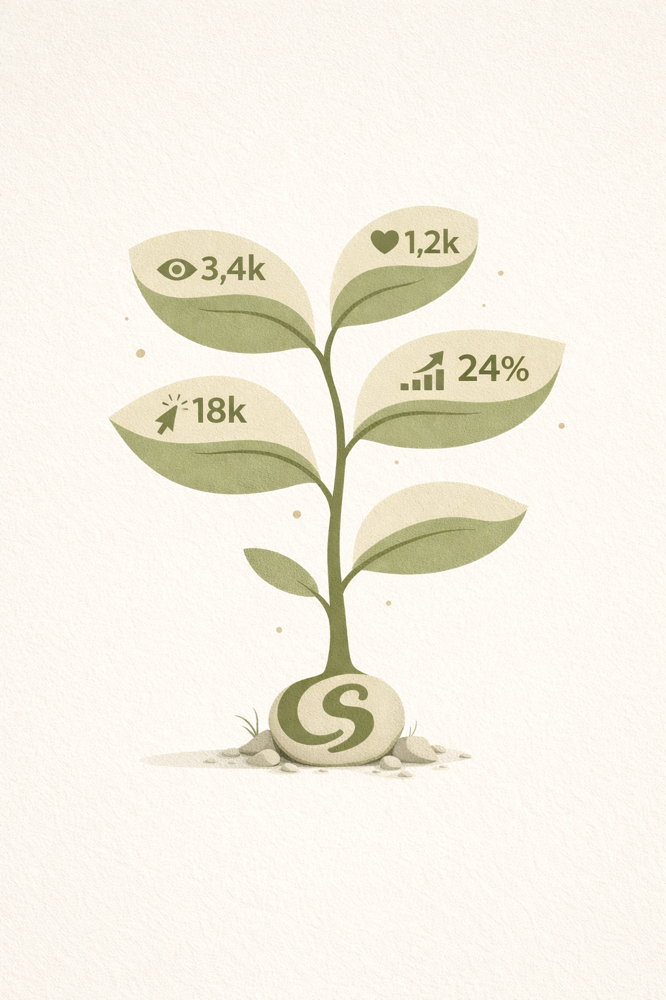
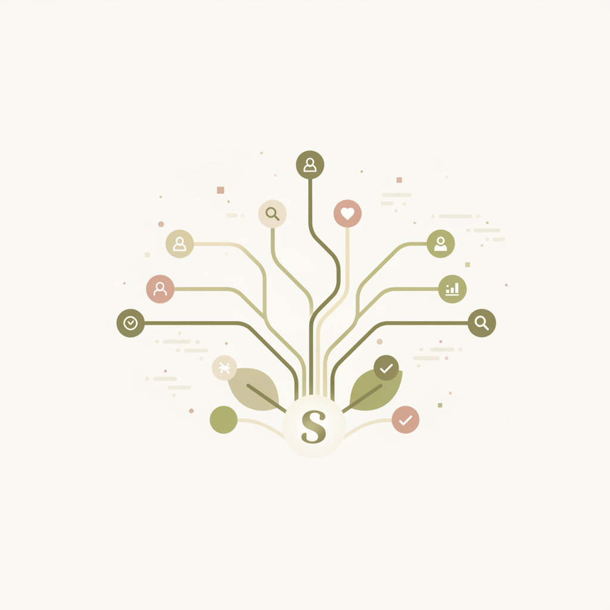
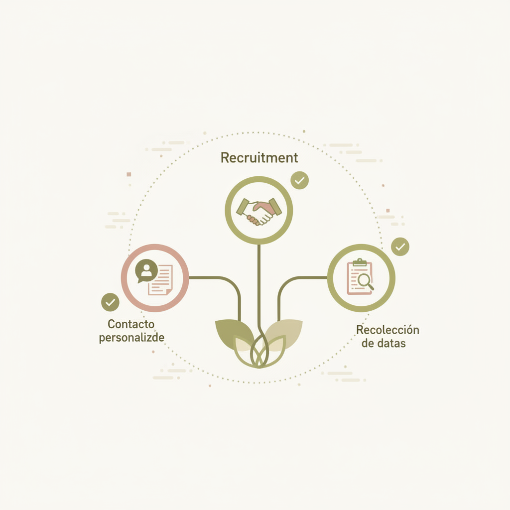
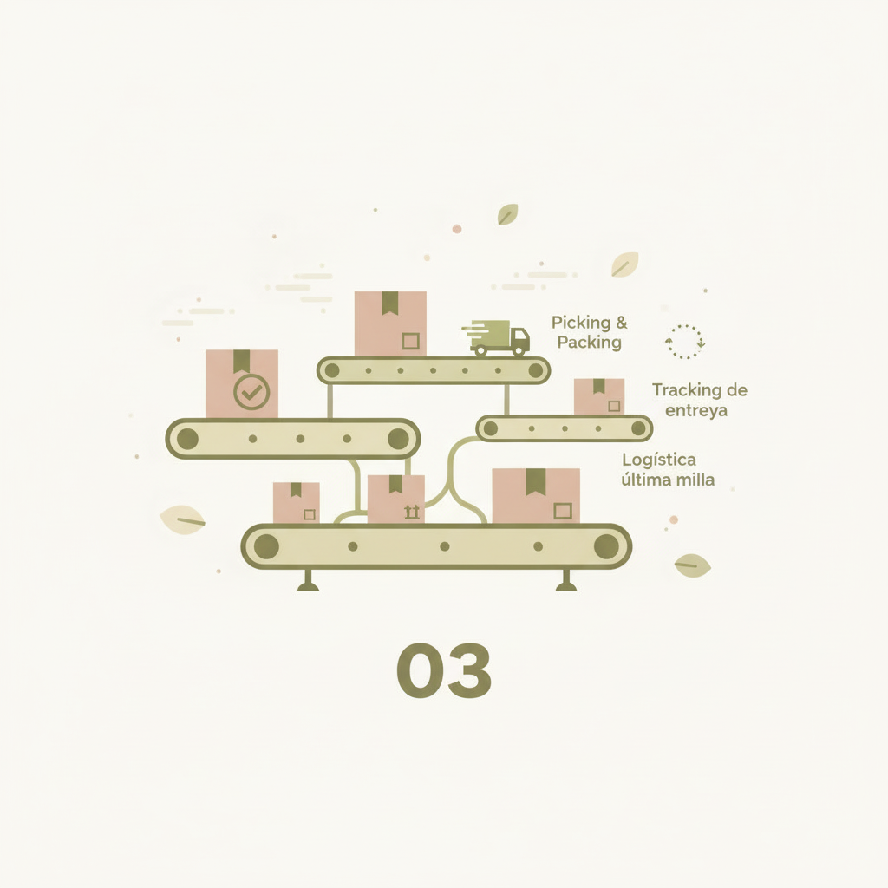
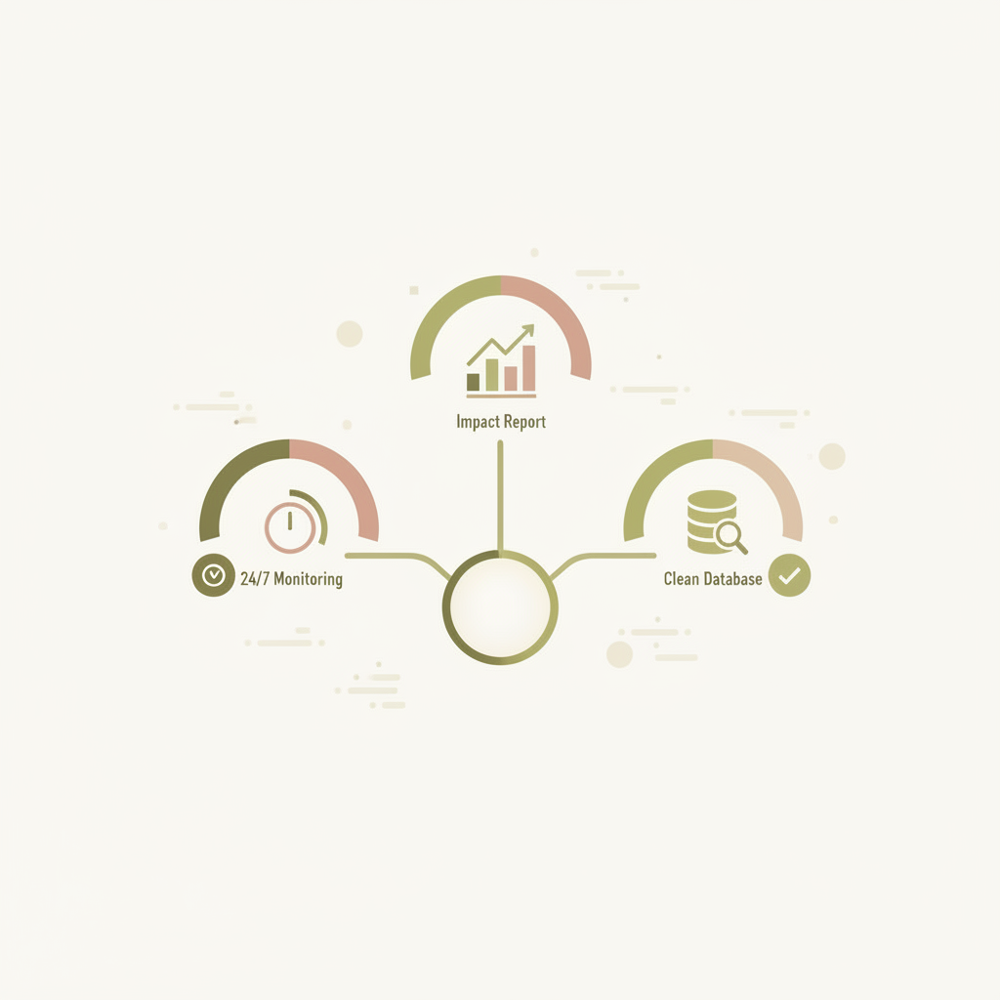

Gestionamos el proceso completo: desde la segmentación hasta las métricas finales. Un sistema ordenado, medible y escalable.
Natura Chile
47 envíos · Semana 2
Perfiles que no conectan con la marca.
Logística manual y propensa a errores.
Historias que se pierden a las 24h.
Falta de trazabilidad en los envíos.
Incertidumbre sobre el ROI real.
"Sin sistema, la campaña depende del azar — y el azar no escala."

Algoritmos y curaduría humana para encontrar el "fit" perfecto.
Dashboard en tiempo real para ver cada etapa del proceso.
Reportes que transforman likes en data accionable para tu negocio.
Identificamos los perfiles que realmente conectan con tu marca usando auditoría de audiencia y validación de datos reales.


Contactamos y gestionamos a cada influencer de forma personalizada. Acuerdos claros, datos completos desde el primer día.
Nos encargamos del picking, packing y la última milla. Tú solo recibes el tracking actualizado.


Todo el impacto de la campaña en un dashboard en tiempo real. Datos limpios, reportes accionables.
Selección curada con data de performance real.
Toda la operación de envío y seguimiento.
Control total de tu campaña en vivo.
Análisis profundo de KPI's y sentimiento.
Soporte directo ante incidencias de envío.
Planes adaptados a tu etapa de crecimiento.
Crecimiento sostenido con mix de perfiles, métricas y dashboard.
El sistema completo: métricas, logística, fulfillment y todo lo incluido.
Recibimos tu inventario en nuestro centro de distribución y nos encargamos de todo el picking, packing y envío.
Usamos un proceso de "doble validación" donde el influencer acepta explícitamente el envío y las condiciones antes de despachar.
Totalmente. Nosotros hacemos la propuesta basada en data, pero tú tienes la última palabra (vía nuestra plataforma) sobre quién recibe el producto.
Sí, y es parte central de nuestra estrategia. Los microinfluencers tienen audiencias más pequeñas pero altamente comprometidas y específicas. Incluimos un mix de perfiles —nano, micro y mid-tier— según los objetivos de cada campaña, siempre validando engagement real antes de seleccionar.
Sí. El contenido orgánico generado —unboxings, reseñas, publicaciones— puede reutilizarse en campañas de paid media, páginas de producto o e-commerce. Esto multiplica el valor de cada envío mucho más allá de la publicación original.
Es una de las formas más inteligentes de usar el seeding. Nuestro plan Starter (20-50 envíos) está diseñado exactamente para eso: probar la aceptación del producto, validar qué perfiles generan mejor respuesta y obtener data real antes de comprometer un presupuesto mayor.
Inscríbete en nuestra red de creadores y sé parte de las próximas campañas de seeding.
Completa el formulario y recibe una propuesta estratégica diseñada para los objetivos de tu marca en menos de 24h.